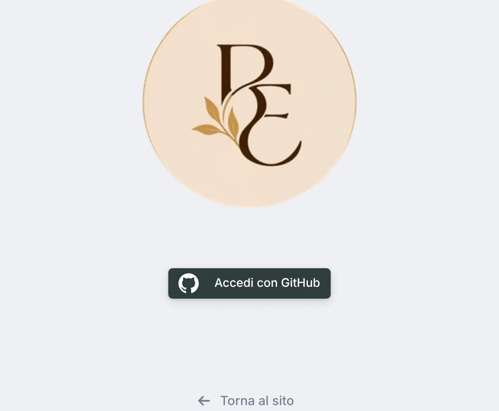
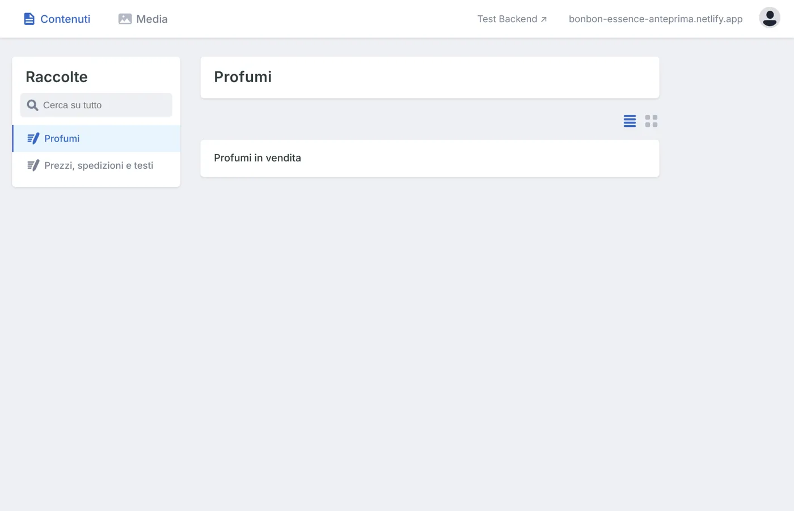
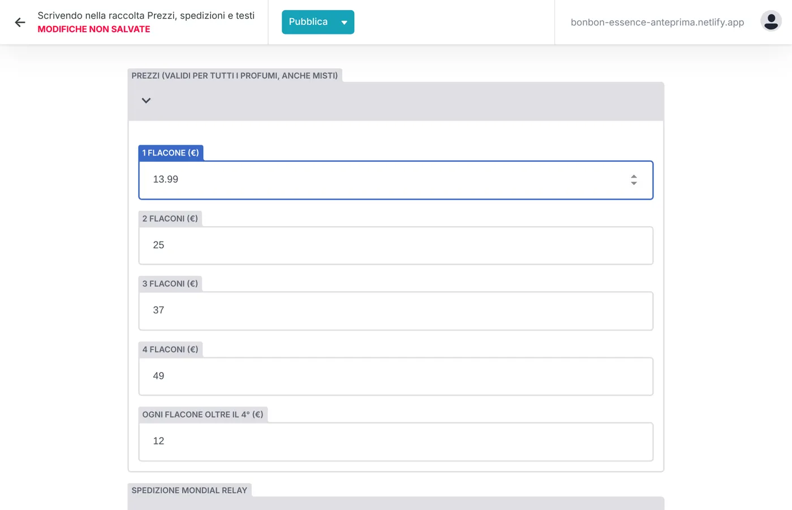
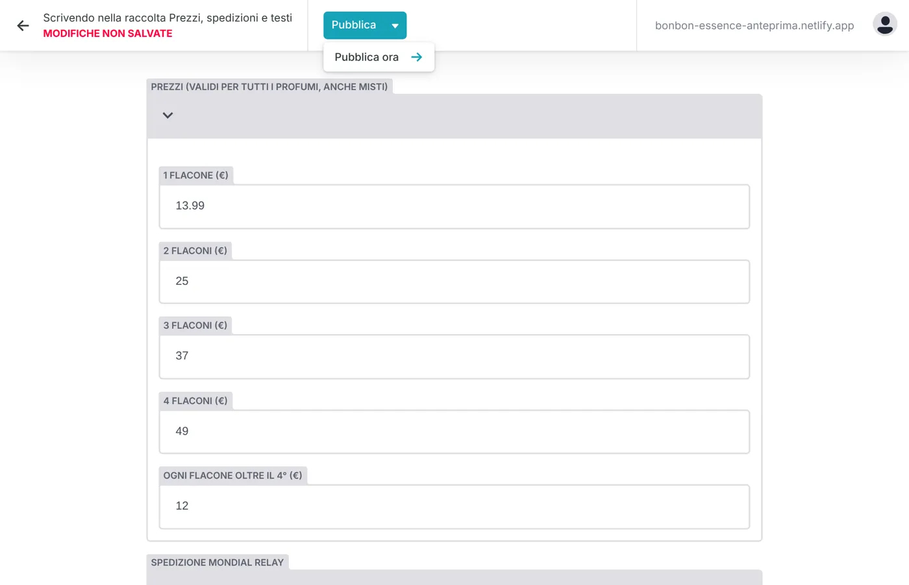
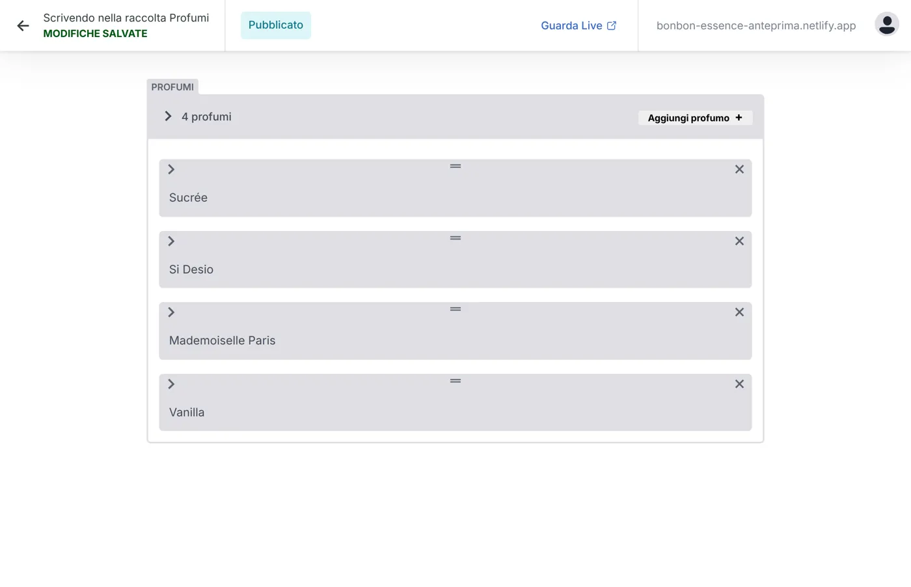
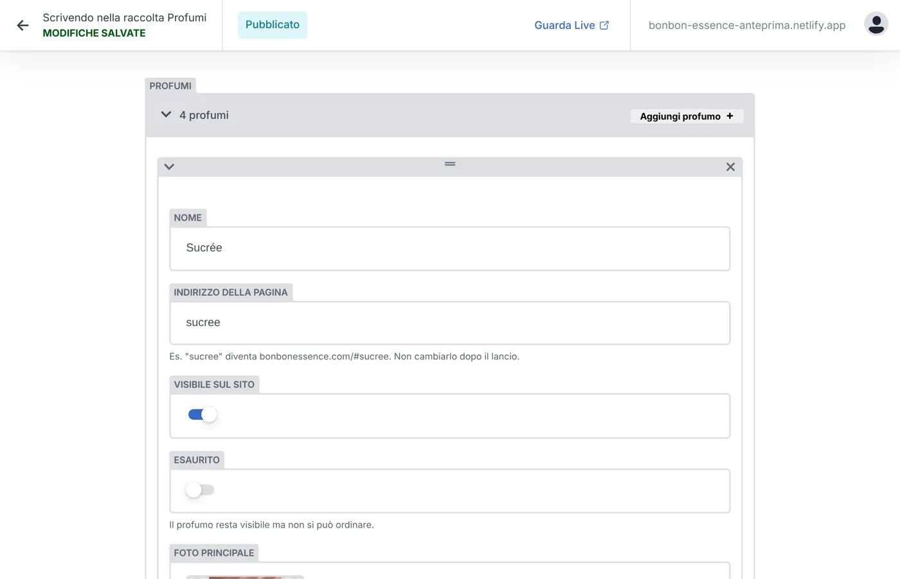
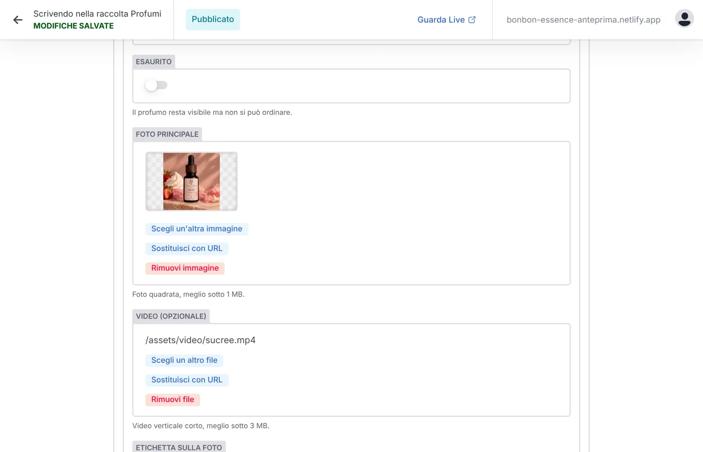
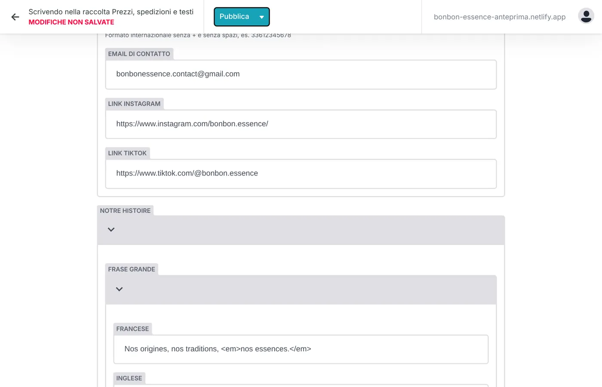

Gestire il sito da sola
Dal pannello cambi prezzi, spedizioni, foto e testi, aggiungi profumi o li segni come esauriti. Quando pubblichi, il sito si aggiorna da solo in circa un minuto.
Entrare nel pannello
- Apri
bonbon-essence-anteprima.netlify.app/admin. Ti conviene salvarlo tra i preferiti. - Premi Accedi con GitHub ed entra con il tuo account GitHub.
- La prima volta GitHub ti chiede di autorizzare l'accesso: conferma.

Le due sezioni
- Profumi: tutto quello che riguarda ogni profumo (nome, foto, video, testi, note, ingredienti, esaurito).
- Prezzi, spedizioni e testi: prezzi a lotti, costi e tempi di spedizione, contatti e la tua storia.

Cambiare un prezzo
- Apri Prezzi, spedizioni e testi → Impostazioni del negozio.
- Cambia il numero che ti interessa. Per i decimali usa il punto:
12.99. - In alto compare MODIFICHE NON SALVATE: è normale, vuol dire che non hai ancora pubblicato.

Nella stessa pagina, più in basso, trovi la spedizione (Francia ed Europa, con i tempi di consegna) e i contatti (WhatsApp per gli ordini, email, Instagram, TikTok).
Pubblicare le modifiche
- Premi Pubblica in alto, poi Pubblica ora.
- Quando compare MODIFICHE SALVATE, la modifica è registrata.
- Aspetta circa un minuto e ricarica il sito: vedrai il cambiamento.

Niente paura di sbagliare: ogni pubblicazione viene salvata, quindi qualsiasi modifica si può annullare e si torna alla versione precedente.
Segnare un profumo esaurito o nasconderlo
- Apri Profumi → Profumi in vendita.
- Clicca sulla freccia › accanto al profumo per aprirlo.
- Attiva Esaurito per mostrarlo con la scritta "Épuisé" senza che si possa ordinare. Disattiva Visibile sul sito per toglierlo del tutto.
- Premi Pubblica → Pubblica ora.


Attenzione alla X in alto a destra di ogni riquadro: elimina il profumo. Se vuoi solo toglierlo per un po', usa "Visibile sul sito".
Cambiare foto o video
- Apri il profumo e scorri fino a Foto principale o Video.
- Premi Scegli un'altra immagine (o "Scegli un altro file" per il video), poi Carica e scegli il file dal computer o dal telefono.
- Seleziona il file appena caricato e conferma, poi pubblica.

Aggiungere un nuovo profumo
- In Profumi in vendita premi Aggiungi profumo +.
- Compila nome, foto e testi. Per ogni testo c'è il francese e l'inglese.
- In Indirizzo della pagina scrivi il nome in minuscolo, senza accenti né spazi, con i trattini. Per esempio "Rose Dorée" diventa
rose-doree. - Pubblica. Il nuovo profumo compare nella collezione, nella ricerca e nel carrello.
Non sai scrivere un testo in inglese? Scrivilo in francese anche nel campo inglese e mandamelo: lo traduco io.
Scrivere la tua storia
- Apri Prezzi, spedizioni e testi e scorri fino a Notre histoire.
- Frase grande è il titolo della sezione. Per mettere alcune parole in corsivo dorato, scrivile così:
<em>nos essences.</em> - Testo è il paragrafo sotto. Scrivi la versione francese e quella inglese, poi pubblica.

Qualche consiglio
- Il pannello funziona anche dal telefono, ma da computer è più comodo.
- Se dopo la pubblicazione il sito non cambia, aspetta un altro minuto e ricarica la pagina.
- Ingredienti: copiali esattamente dai documenti del fornitore. Finché il campo è vuoto, il sito scrive che la lista arriva presto.
- Per qualsiasi dubbio o se qualcosa non torna, scrivimi e lo sistemiamo insieme.